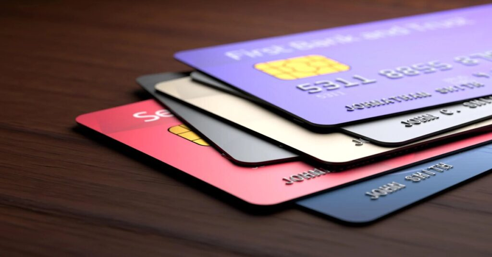

Um banco que atende a todas suas necessidades



Para recuperar sua senha, basta acessar a opção "Esqueci minha senha" no site. Você receberá instruções sobre como redefinir sua senha através do e-mail cadastrado ou de um código de verificação via SMS.
Utilizamos tecnologias avançadas de segurança, como criptografia de ponta a ponta, autenticação de dois fatores e monitoramento constante para proteger suas informações pessoais e transações financeiras. Além disso, oferecemos recursos de segurança adicionais, como biometria e tokens de segurança.
O processo de abertura de conta é rápido e leva apenas alguns minutos. Após enviar seus documentos e passar pela verificação de identidade, sua conta geralmente é aprovada em questão de horas.
Sim, nós oferecemos opções de investimentos, como CDBs, fundos de investimento, Tesouro Direto, entre outros. Você pode acessar esses investimentos diretamente pelo site e começar a investir de forma simples e segura.